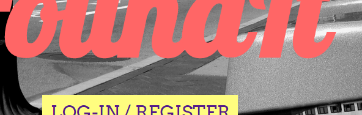

Hello World!
My name is Andrei Talaba, and I love creating things. I started programming in April 2014, and have been trying to create fun or useful things ever since. I'm a computer science major at Cornell University, hoping to vector both in Software Engineering and Security & Trustworthy Systems.
My Resume
You can see my resume as a pdf by clicking here.
My Skills
(Hover for specific skills)
- all
- web
- misc
- HTML/CSS*
- Python
- JavaScript (ES5)*
- jQuery*
- OCaml
- nodeJS
- Java
- ExpressJS
- MySQL
- Git
- MongoDB
- C#
My Classes
Current classes:
- CS 4110 - Programming Languages
- CS 4700 - Foundations of Artificial Intelligence
- CS 4701 - Practicum in Artificial Intelligence
- CS 4410 - Operating Systems
- CS 4411 - Practicum in Operating Systems
- CS 4420 - Computer Architecture
- PSYCH 3420 - Human Perception
- ASIAN 2211 - Introduction to Japan
- PE 1580 - Introduction to Small Boat Sailing
Previous classes:
Spring 2016
- CS 3410 - Computer System Organization & Programming
- CS 4120 - Introduction to Compilers
- CS 4121 - Practicum in Compilers
- BIOMG 1290 - Personal Genetics and Medicine
- PE 1430 - Introduction to Yoga
Fall 2015
- CS 3110 - Data Structures & Functional Programming
- FREN 2090 - French Intermediate Composition & Conversation
- ENGL 2800 - Introduction to Creative Writing
- PE 1366 - Karate
Spring 2015
- CS 2110 - Object-Oriented Programming & Data Structures
- CS 2800 - Discrete Structures
- FREN 1220 - Elementary French
- MATH 2210 - Linear Algebra
- PE 1366 - Karate
- PE 1171 - Intermediate Swing Dance
Fall 2014
- CS 1110 - Introduction to Computing Using Python
- BIOG 1500 - Investigative Bio Labarotary
- FREN 1210 - Elementary French
- ENGL 1191 - FWS: British Literature
- PE 1365 - Karate Basics
My Experience/Projects
Many of my projects and attempts at playing with new languages can be found on GitHub.
No picture available
I cannot give any identifying information about the project
American Express
I was responsible from the full development of an internal, employee-engagement CMS with in-line editing capabilities. I created a design from scratch, implemented it in Django and MySQL, and set up the hosting environment.
Xic
I Worked in a four-person team in my Introduction to Compilers course to create a fully functional compiler, which compiles a statically typed, object-oriented, C-family language down to x86-64 assembly. The language, called oXi, was made for our course. I contributed to each part of the compiler, including parsing, translation to an intermediate representation, optimizations, and translating to assembly. Our compiler for Xi (a version of oXi without its class system) was named most correct in the class.
Ultimate Tic-Tac-TOcaml
I worked together with a group to implement a version of Ultimate Tic-Tac-Toe in OCaml that supports networked multiplayer. I worked on implementing the client and server modules, as well as making sure each module communicated with the one it was supposed to over a TCP connection.
Athenir
Migrated the existing search functionality of Athenir, a search engine for students that focuses on academic queries, from PHP to Flask. Added a back-end using MongoDB to create user and school accounts, as well as required functionality for both account types including allowing schools to filter the results that users see and allowing users share and compartmentalize links into projects and notebooks. (Note: Athenir has since shut down and taken their website offline.
No picture available
I cannot take a picture of source code.
Cornell-Intel Cup
I was hired to extend the website's functionality. I had to migrate the existing search engine functionality to Flask, and add a backend using MongoDB to allow for user and school accounts. I also had to add the required functionality for both account types, including having schools be able to filter the results the users saw, and having users be able to save links into projects that they can then share with others.
Cornell's Phonetic Lab's Website
I was hired to completely redesign the Cornell Phonetic Lab's website, and then implement it in Drupal 7. The result can be found by clicking the above link.
hackersHackBash
A community driven command prompt puzzle my team and I made at UnHackathon 2014. Developed using NodeJS, ExpressJS, and SocketIO. I worked on design, NodeJS, and SocketIO.

wefoundit.herokuapp.com
wefoundit.herokuapp.com
A lost and found website my team and I made at BattleHacks Boston 2014. Developed on a MEAN stack without AngularJS. I worked on design and front-end.

randompoems.me
The first website I ever launched by myself. Static, written only in HTML/CSS/jQuery, and only meant to display my roommate's random poetry.

Wang Lab at Columbia
A website I designed as a favor to Harris Wang. Simple static website written only in HTML/CSS
Space Invaders
A remake of Space Invaders, the part I worked on for my team's game at HackNYU 2014: 'Super Retro Dungeon 3000 Memastered'. Team's game won best technical program. Written in the Ethanon Engine.

Dungeons
A cave puzzle game my team and I made for CodeDayNYC 2014. I worked on most of the programming of the game in the Ethanon Engine.
K-Means Clustering
A k-means custering algorithm I made for my CS 1110 class in Python. The GUI was given to us.
Languages
- English
- Romanian
- French
- Spanish
Native (Speak/Read/Write)
Native (Speak/Read/Write)
Conversational level (Speak/Read/Write) after three semesters of French courses
Basic conversational level (Speak/Read)
My Hobbies
(Click on any hobby)
- Fencing
- Swing
- Karate
- Writing
- Music